A library, a reading room and a parlour, in a building nobody has heated since term ended. There are candles all over the top shelf and the walls are still cold, because that is what a candle does — it lights about a foot of a very large room and leaves the rest of it to you.
Every other warm room on this street is warm all the way to the skirting board. This one is not, and the difference is the whole point of coming in.
The Library
Press a spine and it opens: what the book is, what we think of it, and where to borrow it before anybody suggests buying it. Nothing on these shelves is a book our own pages already argue from — that shelf is up the field in the Hermitage. This is a shop, and a shop stocks what it likes.
A campus, and something wrong with it
The ones where the institution is the monster and the weather is always October.
The Secret History
Donna Tartt · 1992
Six students of Ancient Greek at a small Vermont college decide they are exempt, and the book tells you in its first page what they did. Everything after that is the long, beautifully furnished business of watching them find out that being clever is not the same as being protected. The founding text of the whole shelf: every other book here is answering it.
Read it in the autumn or do not bother.
Where to get it
Borrow or read it at Open LibraryThe catalogue record. Its work id was resolved against Open Library’s own search rather than assembled from the title.
Buy it from an independent shopBookshop.org, searched the same way. A search and not a product id, because a product id nobody could check is how a reader gets sent to the wrong book with a citation’s confidence.
Bunny
Mona Awad · 2019
A scholarship student at an MFA programme is finally invited in by the four rich girls who call each other Bunny, and the workshop turns out to be doing something to small animals that nobody will explain. Funny in the way a held smile is funny. It is on this shelf because it is the only book here that understands that the cruelty of a seminar room is mostly a matter of tone.
Not a gentle book about friendship.
Where to get it
Borrow or read it at Open LibraryThe catalogue record. Its work id was resolved against Open Library’s own search rather than assembled from the title.
Buy it from an independent shopBookshop.org, searched the same way. A search and not a product id, because a product id nobody could check is how a reader gets sent to the wrong book with a citation’s confidence.
The Atlas Six
Olivie Blake · 2020
Six young magicians are recruited to a secret library, told that only five will be initiated, and left to work out the rest. The library is the point: knowledge hoarded by an institution that has decided who deserves it, which is a thing this organisation has opinions about. First self-published; the year on the spine is the one Open Library records for the edition linked here.
The library is the villain.
Where to get it
Borrow or read it at Open LibraryThe catalogue record. Its work id was resolved against Open Library’s own search rather than assembled from the title.
Buy it from an independent shopBookshop.org, searched the same way. A search and not a product id, because a product id nobody could check is how a reader gets sent to the wrong book with a citation’s confidence.
A Deadly Education
Naomi Novik · 2020
A school with no teachers, no exits and a great many things in the ventilation, where the curriculum is survival and the graduation ceremony is the hazard. El is furious for the whole book and right about nearly all of it. Here because it is the funniest description of an institution that will not adjust for anybody, and because it knows that going it alone is a strategy with a body count.
Nobody gets out alone. That is the lesson.
Where to get it
Borrow or read it at Open LibraryThe catalogue record. Its work id was resolved against Open Library’s own search rather than assembled from the title.
Buy it from an independent shopBookshop.org, searched the same way. A search and not a product id, because a product id nobody could check is how a reader gets sent to the wrong book with a citation’s confidence.
The school IS the haunting
Where the building is not a setting. Both of these are romances and neither is a comfortable one.
Nocticadia
Keri Lake · 2023
A medical student takes a place at a remote coastal university built out of an old asylum, and the sea, the cliffs and the faculty all want something. Gothic in the oldest sense — the architecture is doing the plot — and much darker than the campus shelf above it.
The building has opinions.
Where to get it
Borrow or read it at Open LibraryThe catalogue record. Its work id was resolved against Open Library’s own search rather than assembled from the title.
Buy it from an independent shopBookshop.org, searched the same way. A search and not a product id, because a product id nobody could check is how a reader gets sent to the wrong book with a citation’s confidence.
Gothikana
RuNyx · 2023
A university in a castle in the mountains, a girl who has been told her whole life that she is fragile, and a professor with a history. The castle is the third character and gets the best scenes. Self-published before the edition linked here; the year is Open Library's for that record.
Castle. Mountains. Bad idea.
Where to get it
Borrow or read it at Open LibraryThe catalogue record. Its work id was resolved against Open Library’s own search rather than assembled from the title.
Buy it from an independent shopBookshop.org, searched the same way. A search and not a product id, because a product id nobody could check is how a reader gets sent to the wrong book with a citation’s confidence.
Something in the archive is awake
For the vampire librarian. Every one of these is about a person who goes looking in a catalogue and finds that the catalogue has been waiting.
A Discovery of Witches
Deborah Harkness · 2011
A historian of science calls up a manuscript in the Bodleian, notices it is alive, and sends it back — which is the most librarian thing anybody in this room does. Written by an actual historian of science, and it shows in the footnotes it does not print.
Ashmole 782. Request it and see.
Where to get it
Borrow or read it at Open LibraryThe catalogue record. Its work id was resolved against Open Library’s own search rather than assembled from the title.
Buy it from an independent shopBookshop.org, searched the same way. A search and not a product id, because a product id nobody could check is how a reader gets sent to the wrong book with a citation’s confidence.
The Historian
Elizabeth Kostova · 2005
A blank book appears on a shelf, a supervisor vanishes, and three generations of scholars go after Dracula through reading rooms, archives and correspondence. Hundreds of pages of people carefully checking sources, and it is the most frightening book here for exactly that reason. The vampire in this library is a researcher.
The scariest book ever written about footnotes.
Where to get it
Borrow or read it at Open LibraryThe catalogue record. Its work id was resolved against Open Library’s own search rather than assembled from the title.
Buy it from an independent shopBookshop.org, searched the same way. A search and not a product id, because a product id nobody could check is how a reader gets sent to the wrong book with a citation’s confidence.
Dionysus in Wisconsin
E. H. Lupton · 2023
Madison, 1971. A graduate student who has been raising things he should not, a man who works in a record shop, and a god who is extremely interested in both. Queer, regional, not set in an ivy-covered anything, and on this shelf because it is the one book here where the person doing the magic has a day job.
The small-press one. Ask us about it.
Where to get it
Borrow or read it at Open LibraryThe catalogue record. Its work id was resolved against Open Library’s own search rather than assembled from the title.
Buy it from an independent shopBookshop.org, searched the same way. A search and not a product id, because a product id nobody could check is how a reader gets sent to the wrong book with a citation’s confidence.
Every borrow link points at a catalogue record whose id was resolved against Open Library’s own search, and the library and shop links are searches rather than product pages. That is deliberate: a product id typed from memory is a reader sent confidently to the wrong book, which has happened in this repository before and is written down in data/mopery.json so it does not happen again.
Paint It Black
One song, one screen, and a great many people who have decided it should be played on a cello. Jagger and Richards wrote it in 1966; everything under the first entry is somebody answering the arrangement Danny Elfman and Chris Bacon wrote for a girl with a cello in a window. Tuning is not playing. While the screen is off you can walk the whole list and nothing at all leaves this page.
The Rolling StonesOfficial lyric video3:46The record. Cut in 1966 and put out on Aftermath, with Brian Jones playing the sitar line that everybody else on this screen has to find a way around. ABKCO holds the catalogue, so this is the one entry here on its rights holder's own channel.Written by Mick Jagger and Keith Richards · performed on ABKCOVEVO
Wednesday AddamsThe cello scene, from the Netflix series4:43The arrangement from the first episode of Wednesday, scored by Danny Elfman and Chris Bacon, which is the reason every other version below this one exists. AN UNOFFICIAL UPLOAD, and the channel says so itself in the first line of its own description. Here because it is the recording everybody means, and named for what it is rather than dressed up as an official release.Written by Mick Jagger and Keith Richards · performed on The Wizard
The Cello DollSolo cello, in costume2:59One player, one cello, and the Elfman and Bacon arrangement taken apart and put back together by somebody who wanted to see what it could do. Her own description credits the show's composers before she credits herself, which is more than most covers manage.Written by Mick Jagger and Keith Richards · performed on The Cello Doll
Brooklyn DuoCello cover2:09The shortest thing on this screen and the plainest. No costume, no set, no candles: two minutes of a cello and a piano finding out that the tune holds up without any of it.Written by Mick Jagger and Keith Richards · performed on Brooklyn Duo
Julia KimViola, arranged by the player2:22A VIOLA, not a cello, whatever the title says — the channel is a violist's and the arrangement is hers. She notes that she took it for an exercise in string crossings before she noticed what it was, which is the single most string-player sentence on this page. She gives the sheet music away.Written by Mick Jagger and Keith Richards · performed on Julia Kim Viola 줄리아킴 비올라
AmadeusTwo violins, cello and piano4:38A quartet — Andreea Runceanu and Bianca Gavrilescu on violins, Patricia Cimpoiașu on cello, Laura Lazarescu on piano — filmed at the Ghergani estate in Romania, in an arrangement by Xenti Runceanu. The most furniture of any version here, and the only one shot in a house that looks like this room.Written by Mick Jagger and Keith Richards · performed on Amadeus - The Electric Piano Strings Quartet
Prime OrchestraA Wednesday medley, not only this song7:32A full orchestra playing through the series' music live, and the tune arrives inside something larger rather than on its own. Labelled here as a medley because it is one: its own title says so, and a screen promising a cover and delivering a suite would be the same broken promise as a runtime nobody printed.Written by Mick Jagger and Keith Richards · performed on PRIME ORCHESTRA
Imperial OrchestraA Wednesday number from a cinema-medley show6:43The biggest version on the screen by a distance — a stage orchestra with a chorus, filmed as part of a touring cinema-music show. Like the one above it this is a Wednesday number rather than a cover of the single, and it is the last thing in the running order because after it there is nowhere louder to go.Written by Mick Jagger and Keith Richards · performed on Imperial Orchestra
The Raven
Eighteen stanzas, six lines each, and a bird that only knows the one word. Poe published it in January 1845 and it has been out of copyright for longer than most countries have had copyright. All twenty-six of Gustave Doré’s engravings are here, standing at the lines they illustrate, and so are three leaves of an 1865 printing. Set the whole thing in whichever voice you want: the picker holds every typeface on this street, which is the one place here where borrowing all of them is the joke rather than the failure.
There is also a facsimile of the poem in Poe’s own hand, six leaves of it, at the Library of Congress — and it is a link rather than a copy. That facsimile was printed in 1949 for an exhibition at Yale and carries “reproduction prohibited without permission” along the foot of its own first leaf. The poem is Poe’s and free; that printing of it is somebody else’s object. The difference between it and the 1865 book above is one line of metadata, and it is the whole difference between showing you something and pointing at it.
Edgar Allan Poe · first published January 1845 · engravings by Gustave Doré, 1884
Doré’s edition printed the poem straight through and the plates after it, each captioned with the lines it illustrates. Here every plate sits at the lines its own caption quotes, which is our decision about reading rather than a reproduction of that book’s layout. The captions are his edition’s, word for word — which is how you can see that its text is not quite the one set below it.
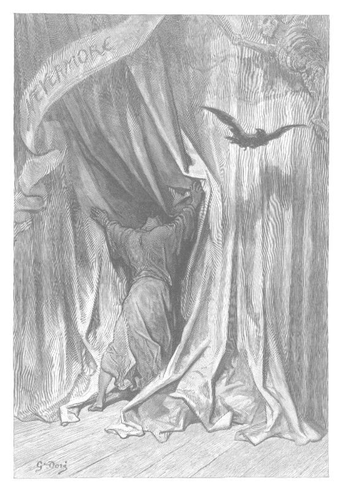
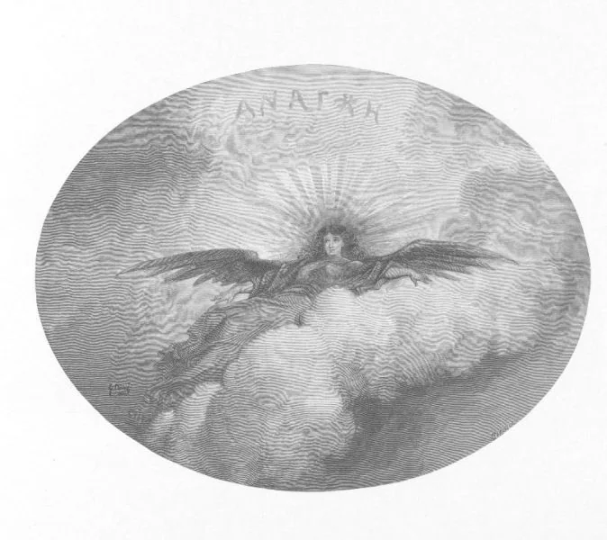
Once upon a midnight dreary, while I pondered, weak and weary,
Over many a quaint and curious volume of forgotten lore—
While I nodded, nearly napping, suddenly there came a tapping,
As of some one gently rapping, rapping at my chamber door.
“’Tis some visiter,” I muttered, “tapping at my chamber door— Only this and nothing more.”
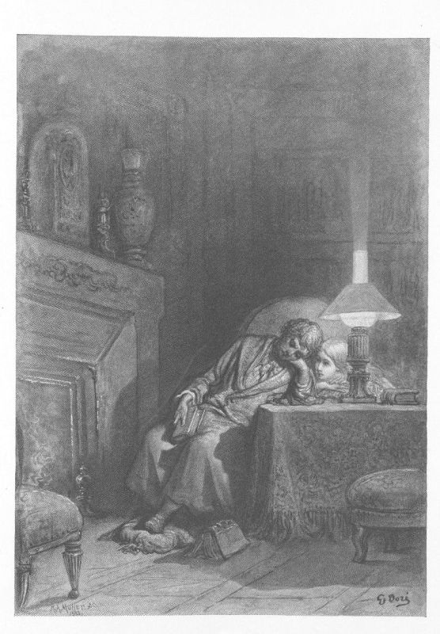
“Once upon a midnight dreary, while I pondered, weak and weary, / Over many a quaint and curious volume of forgotten lore.”
Ah, distinctly I remember it was in the bleak December,
And each separate dying ember wrought its ghost upon the floor.
Eagerly I wished the morrow;—vainly I had sought to borrow
From my books surcease of sorrow—sorrow for the lost Lenore—
For the rare and radiant maiden whom the angels name Lenore— Nameless here for evermore.
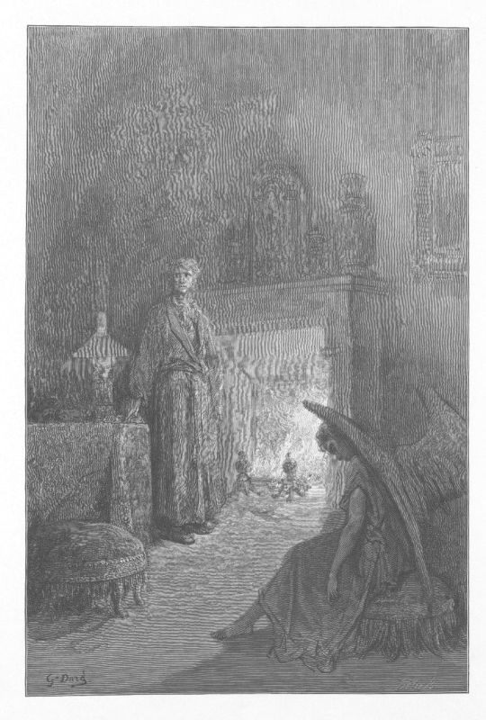
“Ah, distinctly I remember it was in the bleak December, / And each separate dying ember wrought its ghost upon the floor.”
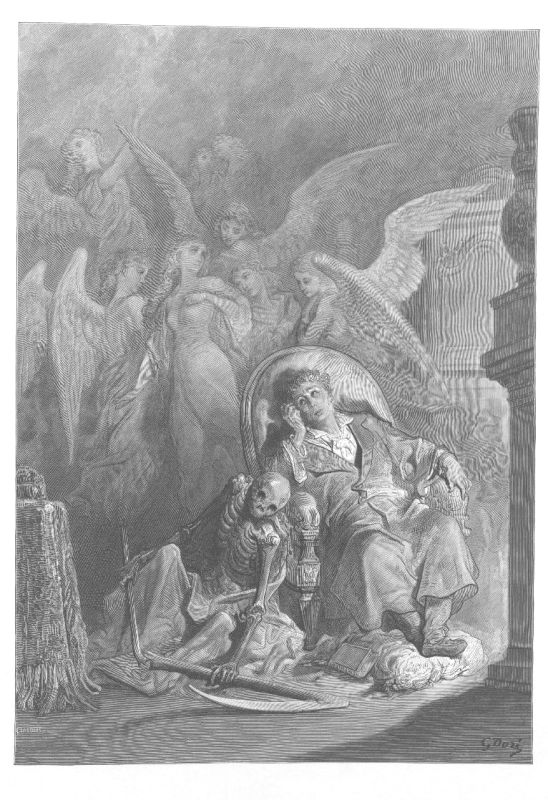
“Eagerly I wished the morrow;—vainly I had sought to borrow / From my books surcease of sorrow.”
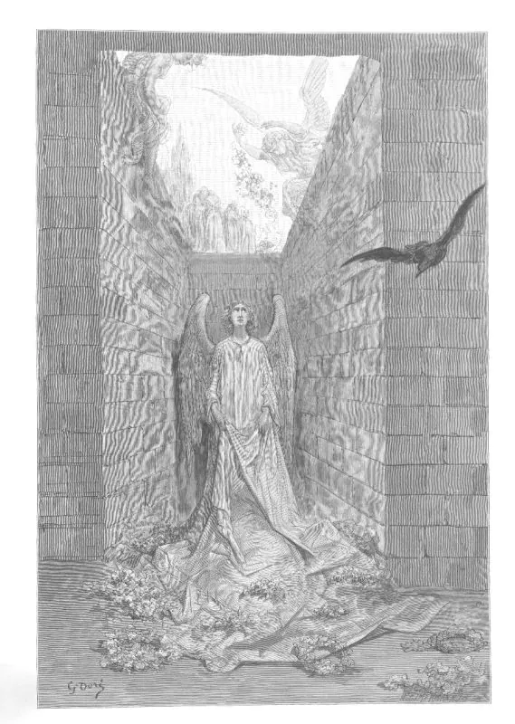
“Sorrow for the lost Lenore.”
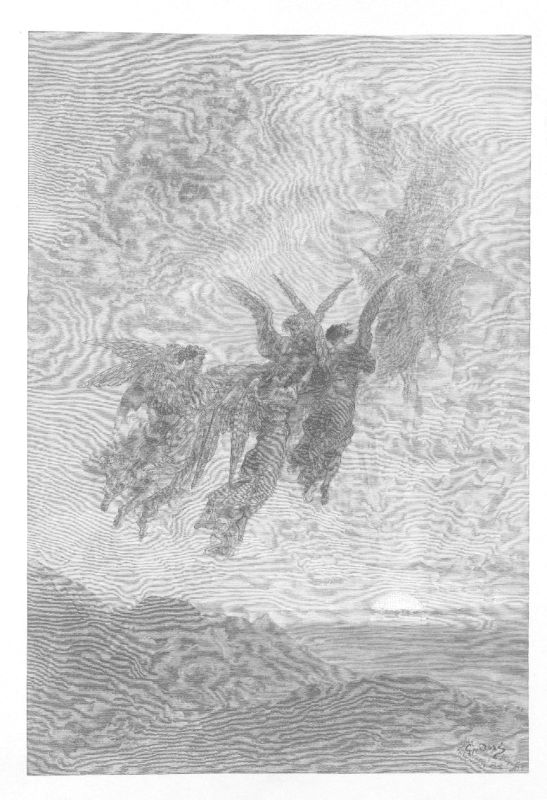
“For the rare and radiant maiden whom the angels name Lenore— / Nameless here for evermore.”
And the silken sad uncertain rustling of each purple curtain
Thrilled me—filled me with fantastic terrors never felt before;
So that now, to still the beating of my heart, I stood repeating
“’Tis some visiter entreating entrance at my chamber door—
Some late visiter entreating entrance at my chamber door; This it is and nothing more.”
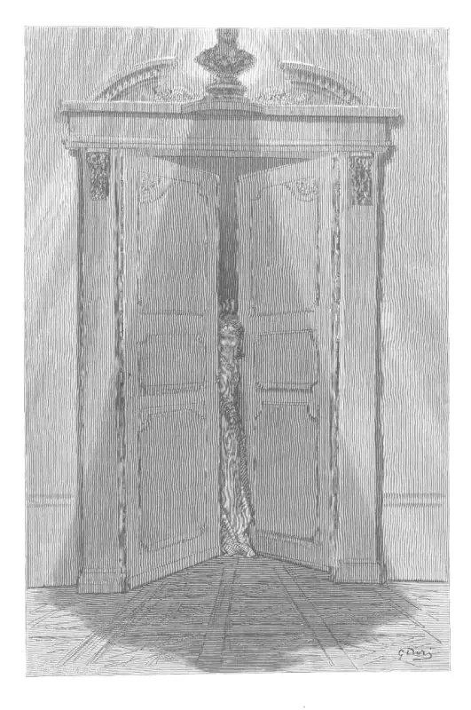
“’T is some visiter entreating entrance at my chamber door— / Some late visiter entreating entrance at my chamber door.”
Presently my soul grew stronger; hesitating then no longer,
“Sir,” said I, “or Madam, truly your forgiveness I implore;
But the fact is I was napping, and so gently you came rapping,
And so faintly you came tapping, tapping at my chamber door,
That I scarce was sure I heard you”—here I opened wide the door— Darkness there and nothing more.
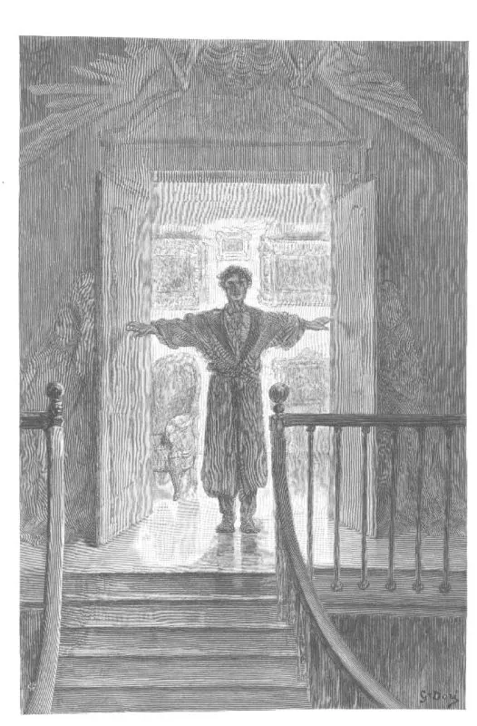
“Here I opened wide the door;— / Darkness there, and nothing more.”
Deep into that darkness peering, long I stood there wondering, fearing,
Doubting, dreaming dreams no mortals ever dared to dream before;
But the silence was unbroken, and the stillness gave no token,
And the only word there spoken was the whispered word, “Lenore?”
This I whispered, and an echo murmured back the word, “Lenore!”— Merely this and nothing more.
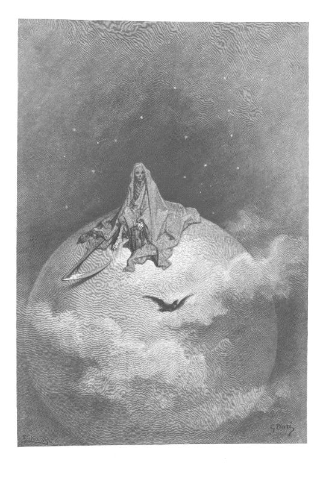
“Doubting, dreaming dreams no mortal ever dared to dream before.”
Back into the chamber turning, all my soul within me burning,
Soon again I heard a tapping something louder than before.
“Surely,” said I, “surely that is something at my window lattice;
Let me see, then, what thereat is and this mystery explore—
Let my heart be still a moment and this mystery explore;— ’Tis the wind and nothing more.”
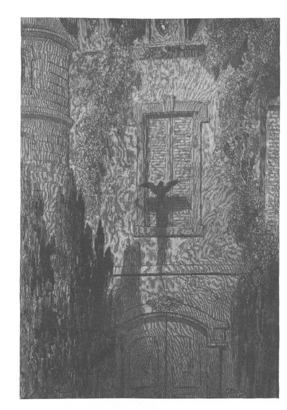
“‘Surely,’ said I, ‘surely that is something at my window lattice; / Let me see, then, what thereat is.’”
Open here I flung the shutter, when, with many a flirt and flutter,
In there stepped a stately Raven of the saintly days of yore.
Not the least obeisance made he; not a minute stopped or stayed he,
But, with mien of lord or lady, perched above my chamber door—
Perched upon a bust of Pallas just above my chamber door— Perched, and sat, and nothing more.
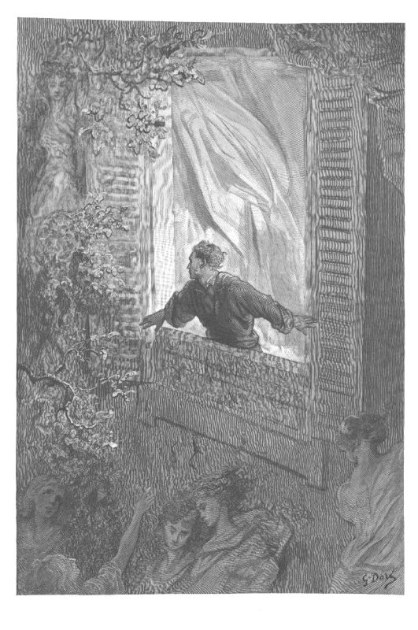
“Open here I flung the shutter.”
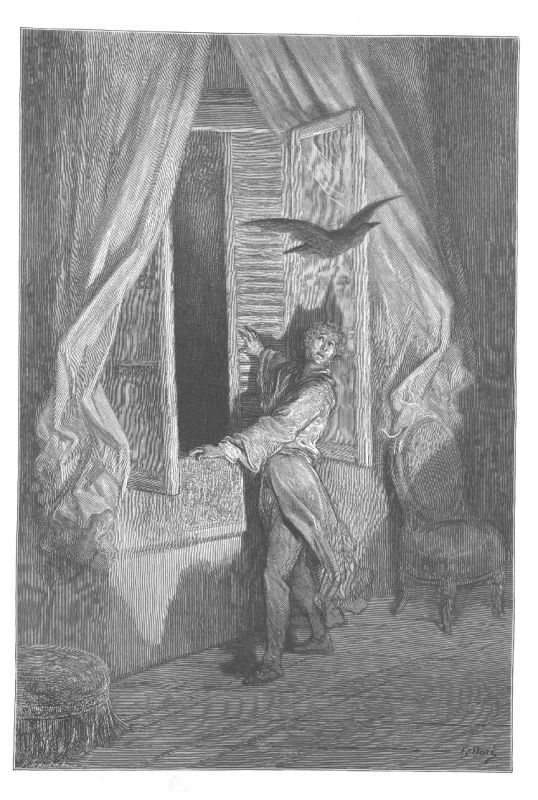
“A stately Raven of the saintly days of yore. / Not the least obeisance made he.”
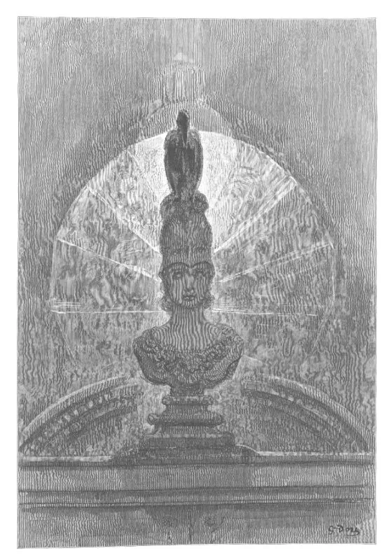
“Perched upon a bust of Pallas just above my chamber door— / Perched, and sat, and nothing more.”
Then the ebony bird beguiling my sad fancy into smiling,
By the grave and stern decorum of the countenance it wore,
“Though thy crest be shorn and shaven, thou,” I said, “art sure no craven,
Ghastly grim and ancient Raven wandering from the Nightly shore—
Tell me what thy lordly name is on the Night’s Plutonian shore!” Quoth the Raven, “Nevermore.”
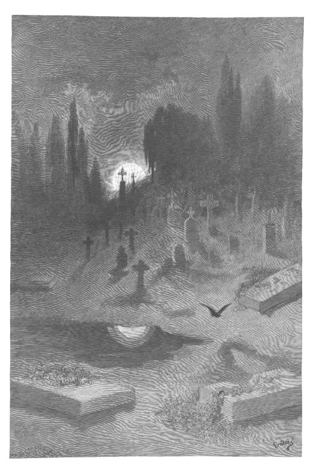
“Wandering from the Nightly shore.”
Much I marvelled this ungainly fowl to hear discourse so plainly,
Though its answer little meaning—little relevancy bore;
For we cannot help agreeing that no living human being
Ever yet was blessed with seeing bird above his chamber door—
Bird or beast upon the sculptured bust above his chamber door, With such name as “Nevermore.”
But the Raven, sitting lonely on that placid bust, spoke only
That one word, as if its soul in that one word he did outpour
Nothing farther then he uttered; not a feather then he fluttered—
Till I scarcely more than muttered: “Other friends have flown before—
On the morrow _he_ will leave me, as my Hopes have flown before.” Then the bird said “Nevermore.”
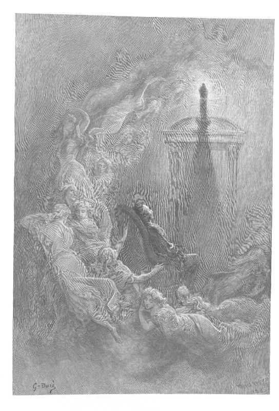
“Till I scarcely more than muttered, ‘Other friends have flown before— / On the morrow he will leave me.’”
Startled at the stillness broken by reply so aptly spoken,
“Doubtless,” said I, “what it utters is its only stock and store,
Caught from some unhappy master whom unmerciful Disaster
Followed fast and followed faster till his songs one burden bore—
Till the dirges of his Hope that melancholy burden bore Of ‘Never—nevermore.’”
But the Raven still beguiling all my sad soul into smiling,
Straight I wheeled a cushioned seat in front of bird and bust and door;
Then, upon the velvet sinking, I betook myself to linking
Fancy unto fancy, thinking what this ominous bird of yore—
What this grim, ungainly, ghastly, gaunt, and ominous bird of yore Meant in croaking “Nevermore.”
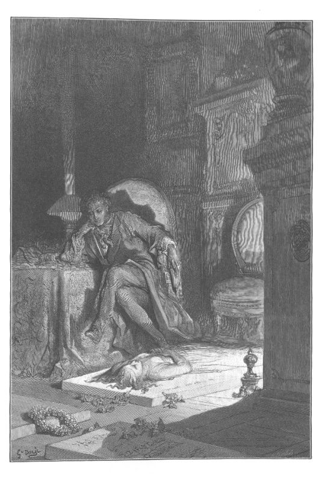
“Then, upon the velvet sinking, I betook myself to linking / Fancy unto fancy.”
This I sat engaged in guessing, but no syllable expressing
To the fowl whose fiery eyes now burned into my bosom’s core;
This and more I sat divining, with my head at ease reclining
On the cushion’s velvet lining that the lamp-light gloated o’er,
But whose velvet violet lining with the lamp-light gloating o’er _She_ shall press, ah, nevermore!
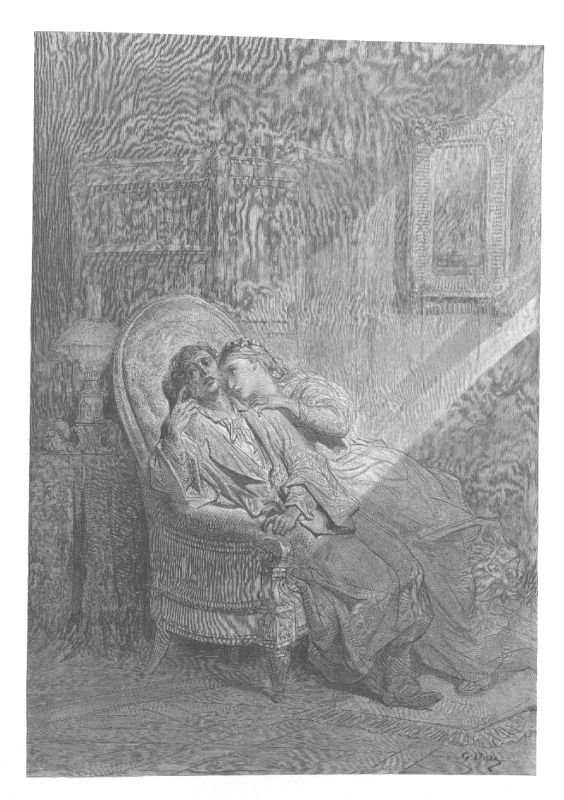
“But whose velvet violet lining with the lamplight gloating o’er / She shall press, ah, nevermore!”
Then, methought, the air grew denser, perfumed from an unseen censer
Swung by Seraphim whose foot-falls tinkled on the tufted floor.
“Wretch,” I cried, “thy God hath lent thee—by these angels he hath sent thee
Respite—respite and nepenthe from thy memories of Lenore!
Quaff, oh quaff this kind nepenthe and forget this lost Lenore!” Quoth the Raven, “Nevermore.”
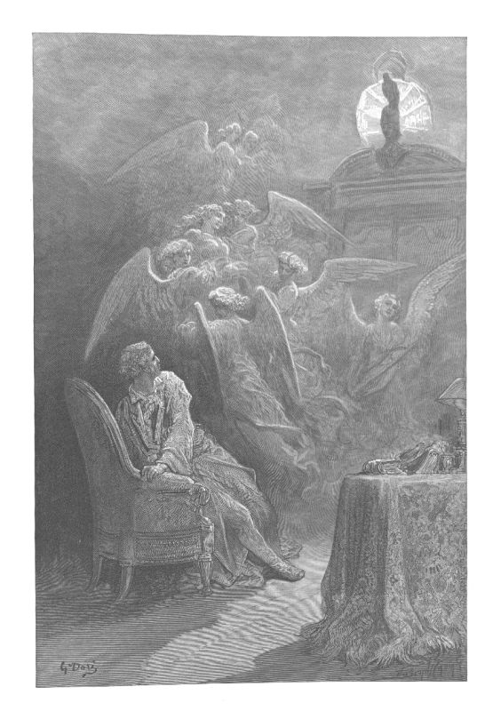
“‘Wretch,’ I cried, ‘thy God hath lent thee—by these angels he hath sent thee / Respite—respite and nepenthe from thy memories of Lenore!’”
“Prophet!” said I, “thing of evil!—prophet still, if bird or devil!—
Whether Tempter sent, or whether tempest tossed thee here ashore,
Desolate, yet all undaunted, on this desert land enchanted—
On this home by Horror haunted—tell me truly, I implore—
Is there—_is_ there balm in Gilead?—tell me—tell me, I implore!” Quoth the Raven, “Nevermore.”
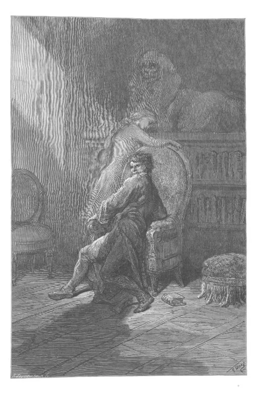
“On this home by Horror haunted.”
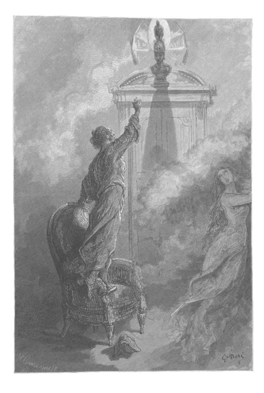
“Tell me truly, I implore— / Is there—is there balm in Gilead?—tell me—tell me, I implore!”
“Prophet!” said I, “thing of evil!—prophet still, if bird or devil!
By that Heaven that bends above us—by that God we both adore—
Tell this soul with sorrow laden if, within the distant Aidenn,
It shall clasp a sainted maiden whom the angels name Lenore—
Clasp a rare and radiant maiden whom the angels name Lenore.” Quoth the Raven, “Nevermore.”
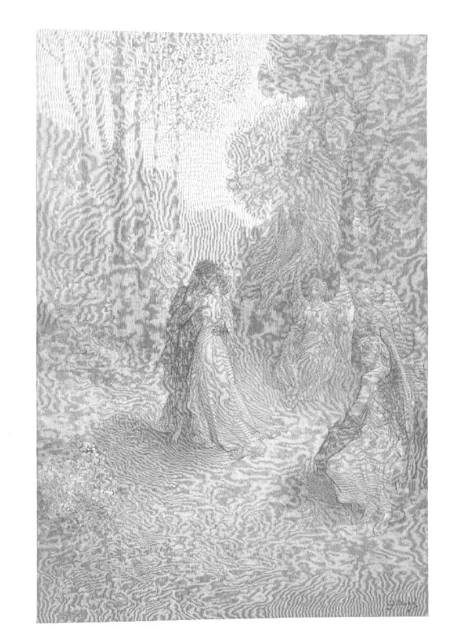
“Tell this soul with sorrow laden if, within the distant Aidenn, / It shall clasp a sainted maiden whom the angels name Lenore.”
“Be that our sign of parting, bird or fiend!” I shrieked, upstarting—
“Get thee back into the tempest and the Night’s Plutonian shore!
Leave no black plume as a token of that lie thy soul has spoken!
Leave my loneliness unbroken!—quit the bust above my door!
Take thy beak from out my heart, and take thy form from off my door!” Quoth the Raven, “Nevermore.”
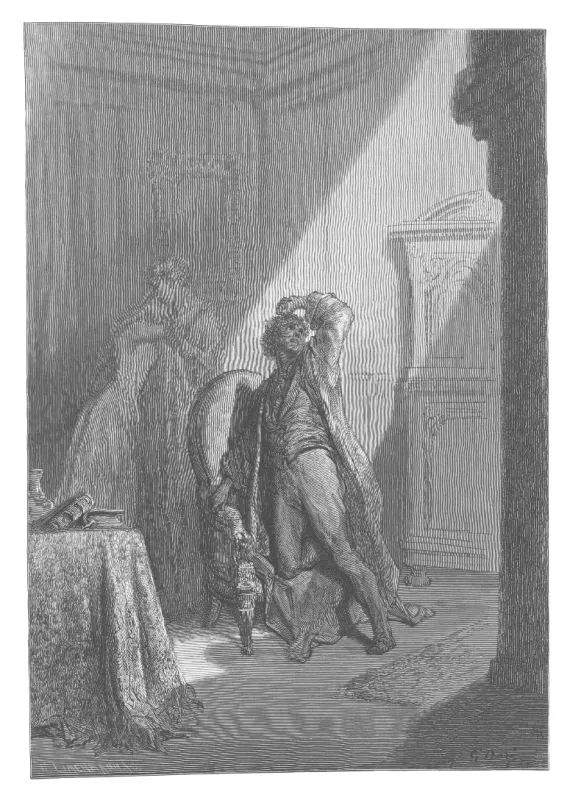
“‘Be that word our sign of parting, bird or fiend!’ I shrieked, upstarting.”
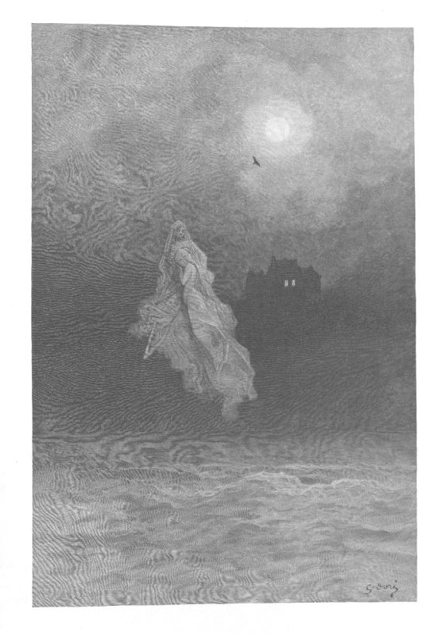
“‘Get thee back into the tempest and the Night’s Plutonian shore!’”
And the Raven, never flitting, still is sitting, still is sitting
On the pallid bust of Pallas just above my chamber door;
And his eyes have all the seeming of a demon’s that is dreaming
And the lamp-light o’er him streaming throws his shadows on the floor;
And my soul from out that shadow that lies floating on the floor Shall be lifted—nevermore!
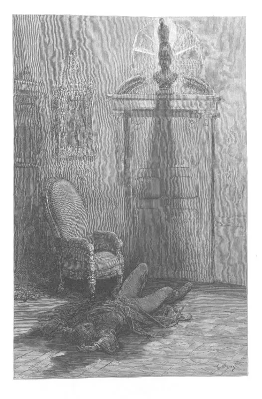
“And my soul from out that shadow that lies floating on the floor / Shall be lifted—nevermore!”
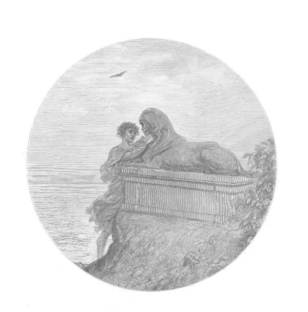
Further in
Two more rooms, neither of which looks anything like this one and neither of which looks like the other.
Nothing plays until you press play. The screen is a picture of a screen until you ask for a video. Tuning through the list with the set off sends nothing anywhere.
Borrowing comes before buying. Every book here has a route that costs nothing, and it is the first link on the card.
Nobody wrote these but the people who wrote them. Every cut on that screen names Jagger and Richards, because eight of them are covers and the performer’s name is the draw.
The dark is not the mood, it is the lighting. Turn the dial down and the candles stop moving; the room stays exactly as dark, exactly as legible, and exactly as full.
Who made the noise in here
The novels belong to the people who wrote them and the notes on them are ours. “Paint It, Black” is Mick Jagger and Keith Richards’, 1966; the cello arrangement everything else is answering is Danny Elfman and Chris Bacon’s, for Netflix. Nothing musical is hosted here. The Raven is Poe’s and out of copyright; the manuscript facsimile stays at the Library of Congress. It is all collected in the liner notes.
HOW LOUD DO YOU WANT IT?
Starts wherever your device says. Nothing moves, flashes, or plays until you say so — and in here, MAX GLITTER is candles guttering and a sign on a bracket.
Job marker — a library card out of the pocket of a book
You have found a job marker. The Adventurer’s Guild is a shopfront on the street, and it posts jobs that send you round these rooms. Take the code below to its board and that job is done. Nothing here is scored, nothing expires, and one is a perfectly good number of jobs to do.
The job: Borrow, not buy
Before the code: Every book on those shelves carries a way to do this, and none of them has to carry a way to buy. One word.
Hint 1
It is what you do at a library rather than at a shop.
Hint 2
The room's own description says books you can do this to.
Last hint
Six letters, and the tool refuses a book without one.
Give me the answer
The answer is Borrow. Our library page says knowledge is infrastructure and access to it is mutual aid. A shelf that could only tell you where to buy would be a shop with an argument painted on it.
Taking the answer is a real way through this, not a lesser one. Nothing is watching and nothing is written down.
Our library page says knowledge is infrastructure and access to it is mutual aid. A shelf that could only tell you where to buy would be a shop with an argument painted on it.